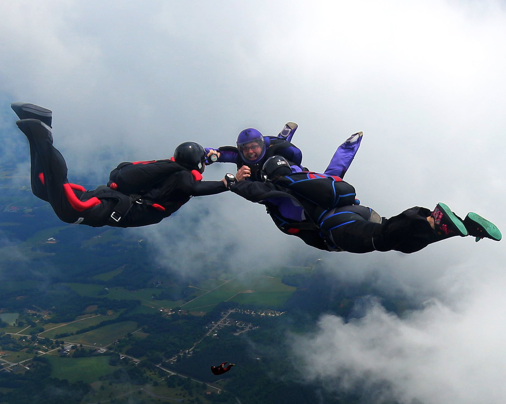

Discover the
Best Place
Welcome!
Best Place
Welcome!


Holi qədim və məşhur bir Hindu bahar festivalıdır. Bu bayram, yaxşılığın pisliyə qarşı qələbəsini, sevgi və bağışlanmanı simvolizə edir. Hindistanda yaranmış bu festival əsasən həmin bölgədə qeyd olunsa da, Hind yarımadasının diasporası vasitəsilə Asiyanın və Qərb dünyasının digər yerlərinə də yayılmışdır.
Holi bayramı Hindu ay təqvimi olan Vikram Samvat Təqvimi-nə əsasən Phalguna ayının dolunay günü (Purnima) başlayır. Bu tarix Miladi təqvimdə mart ayının ortalarına təsadüf edir. Holi bayramı bir gecə və bir gün davam edir.

Yoga tətili, yoga və şüurluluq praktikasını qrup şəklində həyata keçirən insanların yığılmasıdır. Ümumi anlayış, bir neçə gün boyunca dünyadan ayrılmaq, istirahət etmək və öz daxili dünyanızla yenidən əlaqə qurmaqdır. Bu tətil, fiziki və zehni rahatlamağa, bədəni və ruhu bərpa etməyə, eyni zamanda stresdən azad olmağa imkan yaradır. Yoga tətilində iştirak edənlər, daha dərin bir özünüdərk və ruhani yenilənmə təcrübəsi yaşayırlar. Yoga məşqləri, meditasiya və nəfəs məşqləri kimi fəaliyyətlər iştirakçılara rahatlıq və balans təmin edir.

Yeni Zelandiya, adrenalin dolu fəaliyyətlər axtaranlar üçün əsl bir cənnətdir. Ekstremal idman növləri ilə bərabər, təbii gözəlliklərdən də zövq almaq mümkündür. Hər növ macəra axtaranlar üçün təcrübə imkanı sunan bu ölkə, səyahətçilərini məmnun edəcək hər şeyə sahibdir. Yeni Zelandiyada edilə biləcək ən maraqlı ekstremal fəaliyyətlər arasında Bungee Jumping, Skydiving , Canyon Swing ,Whitewater Rafting,Hiking və Trekking
yer alır.Yeni Zelandiya, bungee jumping-in ana və vetenidir,bu fəaliyyət burada çox məşhurdur.